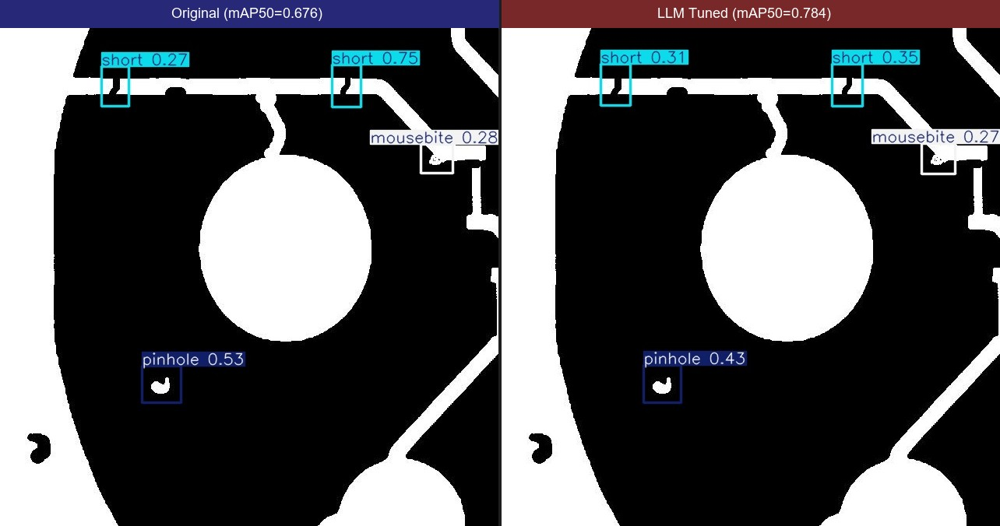
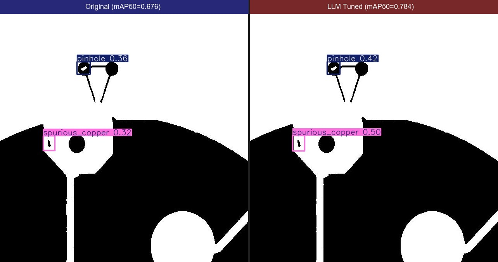
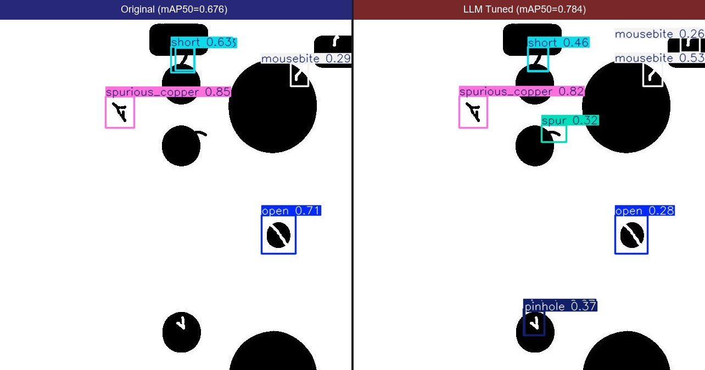
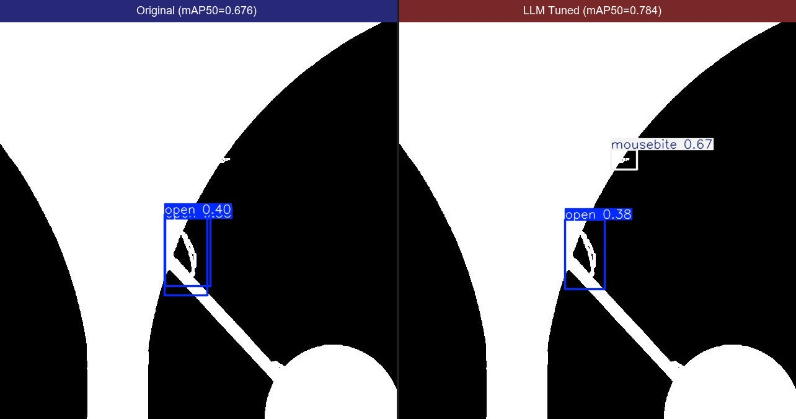
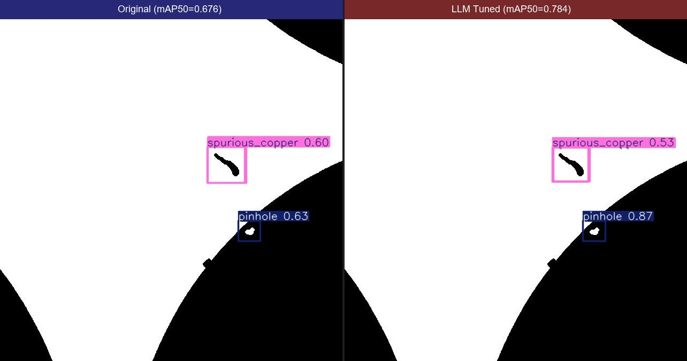
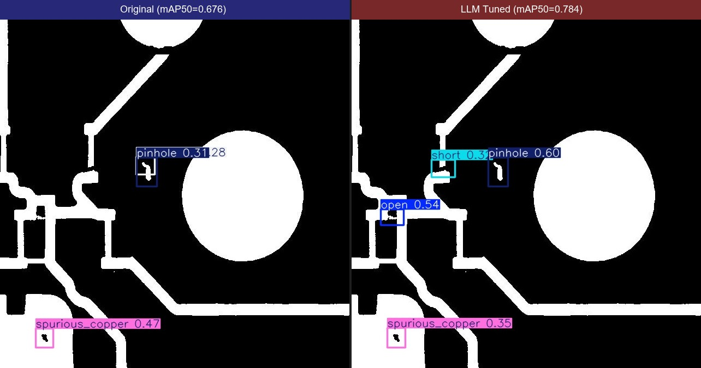

LLM-driven Hyperparameter Optimization for PCB Defect Detection
| Metric | Original (best.pt) | LLM Tuned (best_iter29) | Improvement |
|---|---|---|---|
| mAP50 | 0.676 | 0.784 | +16.0% |
| mAP50-95 | 0.424 | 0.556 | +31.1% |
| Precision | 0.670 | 0.770 | +14.9% |
| Recall | 0.663 | 0.728 | +9.8% |
| Defect Type | Original | LLM Tuned | Change |
|---|---|---|---|
| Open (开路) | 0.759 | 0.827 | +0.068 |
| Short (短路) | 0.558 | 0.723 | +0.165 |
| Mousebite (缺口) | 0.712 | 0.861 | +0.149 |
| Spur (毛刺) | 0.641 | 0.762 | +0.121 |
| Pinhole (针孔) | 0.515 | 0.609 | +0.094 |
| Spurious Cu (伪铜) | 0.871 | 0.920 | +0.049 |






| Parameter | Value | Parameter | Value |
|---|---|---|---|
| lr0 | 0.008 | box | 15.0 (max) |
| lrf | 0.008 | mosaic | 0.1 (low) |
| momentum | 0.937 | mixup | 0.04 (low) |
| weight_decay | 0.0005 | copy_paste | 0.1 |
| dropout | 0.05 | degrees | 2.0 |
LLM discovery: maximize box loss weight + minimize strong augmentations → best for PCB small-defect detection